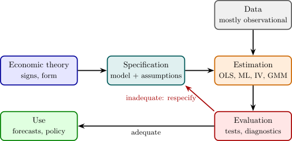

1.1 Economic models and econometric models
Definition 1.1.1. An economic model is a set of assumed relationships among economic variables, usually expressed as equations, together with restrictions on the signs or sizes of the quantities involved.
Example 1.1.2. Keynes’s consumption function states that aggregate consumption \(C\) depends on disposable income \(Y\), \[ C = f(Y), \qquad 0 < f'(Y) < 1 . \] The derivative \(f'(Y)\) is the marginal propensity to consume: of each additional kwacha of income, some but not all is consumed. In the simplest version \(f\) is linear, \(C = \alpha + \beta Y\) with \(0 < \beta < 1\).
The economic model is exact: given \(Y\), it determines \(C\). No data set ever behaves like that. Two households with identical incomes consume different amounts; the same economy with the same income consumes different amounts in different years. The model must be adapted before it can be confronted with data, and the adaptation is what turns an economic model into an econometric one.
Definition 1.1.3. An econometric model consists of
- (i)
- an equation, or a system of equations, linking observable variables and unobservable disturbances, such as \[ C_i = \alpha + \beta Y_i + u_i , \qquad i = 1, \dots , n ; \]
- (ii)
- a set of assumptions about the joint probability distribution of the disturbances and the explanatory variables, such as \(E(u_i \mid Y_i) = 0\);
- (iii)
- the set of parameter values regarded as admissible, such as \(0 < \beta < 1\).
The process that actually generated the data is the data-generating process (DGP). The model is a family of candidate DGPs indexed by the parameters, and the task of estimation is to pick out the member of the family that best matches the data.
The disturbance \(u_i\) is not a nuisance added to make the algebra work. It stands for everything that affects \(C_i\) besides \(Y_i\), and it is worth listing what that includes, because each item reappears later as a reason the standard assumptions can fail:
- (a)
- Omitted variables. Wealth, family size, interest rates and expectations all affect consumption. Each is small or hard to measure, so it is left out and absorbed into \(u_i\). If an omitted variable is correlated with \(Y_i\), then \(E(u_i \mid Y_i) \neq 0\) and the least squares estimator is biased; the proof comes with the treatment of specification error.
- (b)
- Measurement error. National accounts and household surveys measure \(C\) and \(Y\) imperfectly. Error in the dependent variable goes into \(u_i\) harmlessly; error in the explanatory variable does not, and is one of the main reasons for instrumental variables.
- (c)
- Functional form. The true relation may not be linear. The difference between the truth and its linear approximation is part of \(u_i\), and it depends on \(Y_i\).
- (d)
- Intrinsic randomness. Human behaviour is not fully predictable even when everything measurable is held fixed.
Example 1.1.4. The Cobb–Douglas production function relates output \(Q\) to labour \(L\) and capital \(K\) by \[ Q = A L^{\beta _L} K^{\beta _K} e^{u} . \] It is not linear in the parameters, but its logarithm is: \begin {equation} \label {eq:cobb} \log Q = \alpha + \beta _L \log L + \beta _K \log K + u , \qquad \alpha = \log A . \end {equation} The coefficients are elasticities. Holding \(K\) fixed, \[ \beta _L = \frac {\partial \log Q}{\partial \log L} = \frac {\partial Q / Q}{\partial L / L}, \] the percentage change in output per 1% change in labour. Scaling both inputs by \(\lambda \) multiplies output by \(\lambda ^{\beta _L + \beta _K}\), so returns to scale are increasing, constant or decreasing as \(\beta _L + \beta _K\) is greater than, equal to or less than \(1\). “Are returns to scale constant?” becomes the testable restriction \(\beta _L + \beta _K = 1\), a linear restriction of the kind treated with inference in the \(k\)-variable model.
Notice that the disturbance entered the original equation multiplicatively, as \(e^{u}\). That is a modelling choice, made so that the logarithm produces an additive error. Had the model been \(Q = A L^{\beta _L} K^{\beta _K} + u\), taking logarithms would not have produced (1.1), and the model would have had to be estimated by non-linear methods. How the disturbance enters is part of the specification, not an afterthought.
What econometricians do with a model
Any empirical study cycles through the same four tasks (Figure 1).
- (1)
- Specification: choose the variables, the functional form and the assumptions on the disturbances.
- (2)
- Estimation: use the data to estimate the parameters, by least squares, maximum likelihood, instrumental variables or the generalised method of moments.
- (3)
- Evaluation: test the hypotheses of interest, and test the model itself. Are the residuals consistent with the assumptions? Is the model stable over time? If not, return to step (1).
- (4)
- Use: forecast, or evaluate a policy. What happens to food consumption if a subsidy lowers the price by 10%?

Causal and predictive questions
Two different questions can be asked of the same data, and it matters which one is being asked.
A predictive question asks what value of \(C\) to expect for a household with income \(Y\). Any feature of the joint distribution of \(C\) and \(Y\) that helps prediction is legitimate, whatever its cause.
A causal question asks what would happen to a household’s consumption if its income were raised by one kwacha, other things equal. The phrase ceteris paribus is the heart of it. In observational data, households with higher incomes also differ in education, age, location and wealth, and a comparison across households mixes the effect of income with the effects of everything that comes with it.
Example 1.1.5. Regress the log wage of workers on their years of schooling. The slope estimates by how much log wages differ between workers whose schooling differs by a year. It does not, without more assumptions, estimate the effect of an extra year of schooling on a given worker’s wage. Workers who stay longer at school may differ in ability or family background, and these raise wages directly. Ability is unobserved, so it sits in the disturbance, and it is correlated with schooling. The comparison across workers then credits schooling with part of the effect of ability. The slope answers the predictive question correctly and the causal question with a bias. The sections on instrumental variables and on panel data return to this example with methods that can remove the bias.
Questions on this section
Stuck on something here? Ask below and it stays attached to this topic.